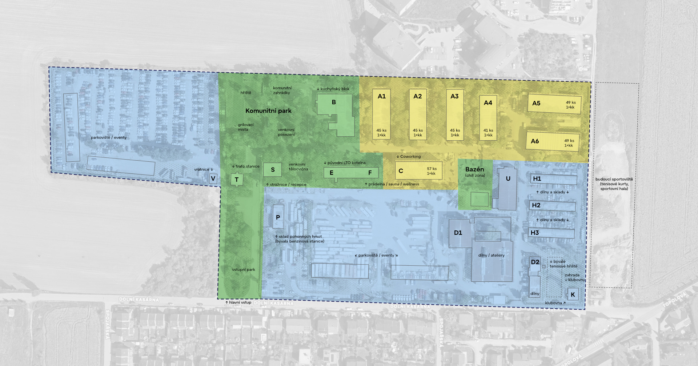
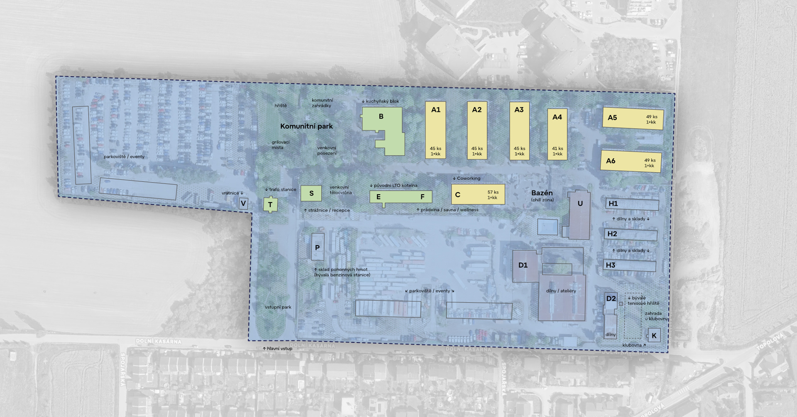
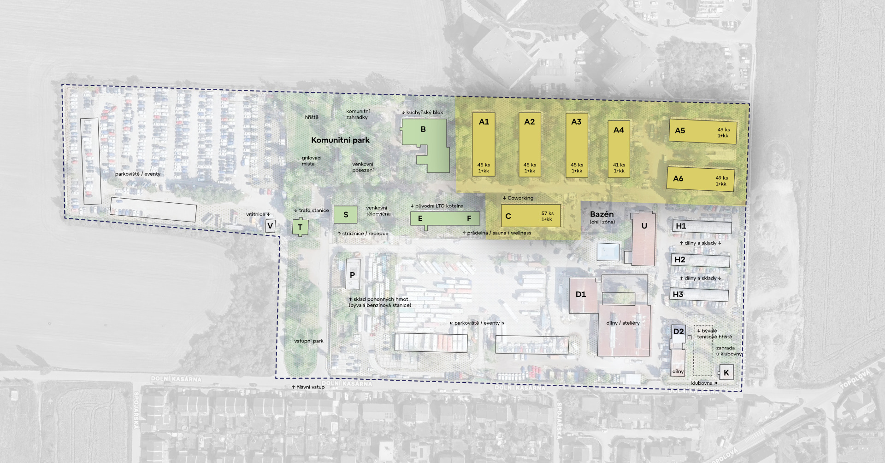
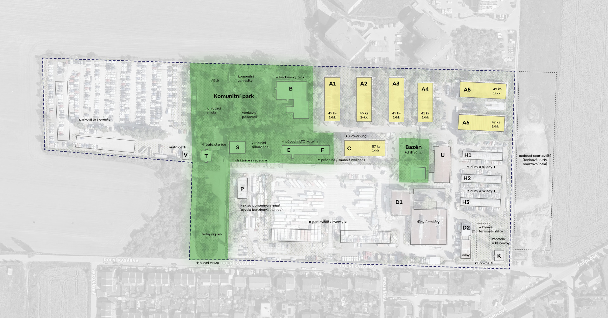

Investiční záměr
VPD1
Podkladové aktivum: areál Horních kasáren v Klecanech u Prahy (dále jen "Areál")
Rozloha všech parcel, které tvoří Areál:
83 327 m²
Celková rozloha zastavitelných ploch Areálu dle současného ÚP:
77 210 m²
HPP všech budov stojících v Areálu, u kterých lze v souladu se současným ÚP přistoupit ihned k rekonstrukci:
18 707 m²
Kupní cena Areálu (současná), jejíž splatnost lze odložit až do roku 2039:
457 829 167 Kč
Kupní cena Areálu (současná) v přepočtu na jeden m2:
5 494 Kč/m²
Nejzazší termín sjednaný pro odkoupení Areálu na základě uzavřených smluv:
únor 2039
Parcely, které tvoří Areál, jsou zapsány na:
LV 1436; katastrální území: Klecany (vyznačeno na ortofotomapě)
Majitelem Areálu je SPV společnost:
FTV Cerhovice s.r.o. (dále jen "FTV")
Právo odkoupit Areál je smluvně zajištěno na řad SPV společnosti (na řad = smlouvu je možné podstoupit na třetí stranu):
VPD Klecany s.r.o. (dále jen "VPD")
Zástavba Areálu novými stavbami je možná po splnění podmínek v současném ÚP (viz analýza ÚP):
od roku 2030
Nad rámec práva odkupu je k Areálu do února roku 2039 smluvně zajištěno:
právo užívání / nájmu, právo neomezeného podnájmu, právo stavby, plná moc k jednání za FTV s úřady
Základní investiční záměr s podkladovým aktivem:
development Areálu do podoby moderní městské čtvrti s komunitním & coworkingovým zázemím
*pokud je použito slovní spojení "odkup Areálu" či "kupní cena Areálu", je tím myšlen odkup 100 % obchodního podílu ve společnosti FTV a kupní cena za tento podíl
Ortofotomapa areálu Horních kasáren se schématickým zákresem zvažované 1. developerské fáze investičně-realizačního scénáře S1




Základní informace k záměru VPD1
Rozloha všech parcel, které tvoří Areál:
83 327 m²
Rozloha parcel, které v Areálu lze zastavět novostavbami bytových domů dle současného ÚP (plochy SM - smíšené městské):
77 210 m²
HPP všech budov stojících v Areálu, u kterých lze v souladu se současným ÚP přistoupit ihned k rekonstrukci:
18 707 m²
Tržní hodnota Areálu byla odhadnuta znalcem k 31. 12. 2024 (viz příslušný znalecký posudek) na:
536 200 000 Kč
Kolik procent ze znalcem odhadnuté tržní hodnoty Areálu činí současná kupní cena Areálu:
85,38 %
Současná kupní cena Areálu po jejím navýšení v roce 2024, 2025 a 2026 (k navýšení dochází každý rok k 10. 3.):
457 829 167 Kč
Kupní cena Areálu (současná) v přepočtu na jeden m2 nakupovaných pozemků:
5 494 Kč/m²
Základ kupní ceny Areálu sjednaný 24. 2. 2023 uzavřením SoSB:
385 000 000 Kč
Základ kupní ceny Areálu se každoročně k 10. 3., a to pokud inflace CPI za předchozí rok nepřesáhne 5 %, navyšuje o částku:
19 250 000 Kč
Pokud inflace CPI za předchozí rok přesáhne 5 %, navýší se k 10. 3. základ kupní ceny o částku, která se získá:
vynásobením základu kupní ceny s vyhlášenou inflací CPI za předchozí rok
Průměrný smluvený meziroční růst Kupní ceny Areálu vzhledem k jeho Kupní ceně v příslušném roce (při inflaci do 5 %):
od 2,79 % do max. 4,20 % (navýšení ceny podkladového aktiva se k 10. 3. kapitalizuje do smluvené Kupní ceny)
Průměrná výše sjednaných záloh na Kupní cenu vzhledem k výši Kupní ceny v příslušném roce (při inflaci do 5 %):
od 0,63 % do max. 4,01 % (bazální cash-flow záměru)
Již uhrazené zálohy na kupní cenu Areálu:
16 000 000 Kč
Z kupní ceny Areálu v současnosti zbývá doplatit:
441 829 167 Kč
Zastavitelnost Areálu dle současného ÚP:
40 %
Povolená podlažnost v Areálu dle současného ÚP:
tři nadzemní podlaží plus podkroví
Podlažnost bytových domů přiléhajících ze severní strany k Areálu:
až 8 nadzemních podlaží
Index zvolený pro níže uvedený výpočet nadzemních HPP, který se držví v mezích současného ÚP:
3,60
Index zvolený pro níže uvedený převod HPP na ČPP:
0,8
HPP bytových domů (nadzemních podlaží), které lze v Areálu potenciálně umístit bez změny současného ÚP:
111 182 m²
ČPP bytových jednotek, které lze v Areálu potenciálně umístit v souladu se současným ÚP:
88 946 m²
Kupní cena Areálu (současná) v přepočtu na jeden m2 ČPP bytových jednotek, které lze dle současného ÚP v Areálu umístit:
5 147 Kč/m² ČPP
*pokud je použito slovní spojení "odkup Areálu" či "kupní cena Areálu", je tím myšlen odkup 100 % obchodního podílu ve společnosti FTV a kupní cena za tento podíl
Ostatní informace k záměru VPD1
Vlastníkem 100% obchodního podílu ve společnosti FTV a jediným jednatelem je:
Jaromír Wimmer
Vlastníkem 100% obchodního podílu ve společnosti VPD a jediným jednatelem je:
Marek Semerád
Nájem Areálu (převoditelný na společnost VPD) je do odkupu Areálu smluvně garantován a uzavřen na spolek:
Občanské sdružení Alternativa II, z.s. (dále jen "Spolek" či "OSA II" či "Partner společnosti VPD")
Předsedou spolku OSA II a jediným jednatelem (statutárním zástupcem) je:
Marek Semerád
Adresa, kde se nalézá Areál (adresa původní armádní klubovny):
Dolní Kasárna 798, 250 67 Klecany, Česko
Odkaz na Mapy.cz (adresa klubovny):
Odkaz na Google maps (adresa klubovny):
Obec kde se nalézá Areál:
Klecany (dále též jen "Obec" či "Město" či "Nejmenší Město v lokalitě Praha-východ")
Počet obyvatel Obce k 1. 1. 2025:
Statut obce:
město
Okres kde se nalézá Areál:
Praha-východ
Správní obvod obce s rozšířenou působností:
Brandýs nad Labem-Stará Boleslav
Správní obvod obce s pověřeným obecním úřadem:
Odolena Voda
Poslední volby do zastupitelstva Obce se konaly:
23.–24. září 2022
Počet voličů, kteří vložili do volební urny obálku se svým rozhodnutím ve volbách do zastupitelstva Obce v roce 2022:
1 228 oprávněných voličů
Odkaz na podrobné volební výsledky v Obci zveřejněné ČSÚ:
Odkaz na podrobné volební výsledky v Obci zpracované a zveřejněné na serveru Seznam.cz:
Příští volby do zastupitelstva Obce se konají:
23.09. – 24.09.2026
Do kdy nejpozději lze přihlásit kandidáty do nejbližších voleb, ve kterých se bude volit nové zastupitelstvo Obce:
19. července 2026 do 16:00 hod. (66 dní před 23. 9.)
*pokud je použito slovní spojení "odkup Areálu" či "kupní cena Areálu", je tím myšlen odkup 100 % obchodního podílu ve společnosti FTV a kupní cena za tento podíl